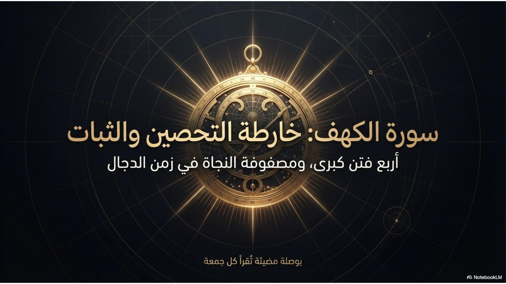

تدبُّر
الرئيسية
الكهف
خارطة التحصين
بسم الله الرحمن الرحيم
سورة الكهف
خارطة التحصين والثبات
أربع فتن كبرى، ومصفوفة النجاة في زمن الدجال
١٥ شريحة بصرية — بواسطة NotebookLM
تنبيه:
هذا العرض مُنتَج بالذكاء الاصطناعي (NotebookLM). المحتوى القرآني فيه لم يُراجَع بالكامل — قد يحتوي على أخطاء في النصوص. للتدبّر الدقيق، ارجع للتجربة التفاعلية الكاملة.
للحصول على أفضل تجربة، أدِر هاتفك أفقياً
سورة الكهف: خارطة التحصين والثبات

‹
›
١
/ ١٥
ملء الشاشة
استخدم
→
←
للتنقل بين الشرائح
ابدأ التدبّر التفاعلي الكامل
←
١١٠ آيات · تفسير · ظلال · معاني الكلمات · أسباب النزول
العرض البصري: NotebookLM (Google) · التجربة التفاعلية: مشروع تدبُّر